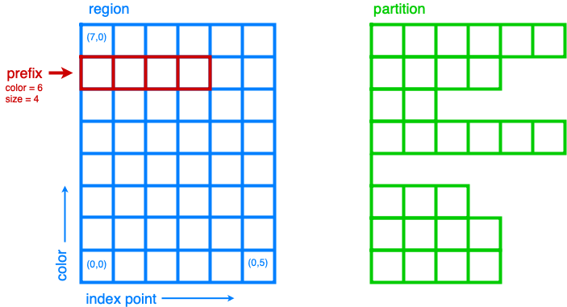

Internal Summary
This page describes the structure and operation of FleCSI in developers’ terms but at a high level. It is meant to provide context for the details found when reading a source file (especially for the first time).
Components
FleCSI performs only a few fundamental actions, each of which corresponds to one of the namespaces/directories under flecsi:
data: Allocate distributed one-dimensional arrays of arbitrary trivial types (fields).topo: Organize those arrays into topologies that represent computational physics domains of several kinds.exec: Call user-specified functions (tasks) with pointers to the allocated memory (in the form of accessors).io: Save and restore the contents of fields to and from disk.flog: Aggregate diagnostic output from multiple processes.
Some FleCSI actions have a single implementation while others rely on different implementations depending on the underlying communication and tasking mechanisms.
In the preceding list, the topo and flog components have a single implementation.
The other FleCSI components are built atop backends that leverage some external mechanism for allocating memory, transferring distributed data, and executing tasks.
The common backend API comprises a small set of classes and function templates that are sufficient to implement the rest of FleCSI; each class/function template is called an entry point.
Most entry points are defined in files named policy.hh in a backend-specific directory in each of the data, exec, and io components.
A backend is selected at CMake configuration time by providing a value for the FLECSI_BACKEND option.
It must be one of legion, hpx, or mpi.
FleCSI will define the preprocessor macro FLECSI_BACKEND as an integer FLECSI_BACKEND_backend (e.g., FLECSI_BACKEND_legion), which can be tested against to delineate backend-specific code.
The reference backend uses Legion for these purposes, which imposes stringent requirements on the application because of its implicit operation across processors and memory spaces. The conceit is that code (in FleCSI and its clients) that is compatible with Legion will also work with most other backends.
The MPI backend uses MPI to transfer data; since MPI does not facilitate general allocation and task launches, these are implemented in terms of ordinary C++ constructs. It is not intended that it support every FleCSI feature, since some would require implementing a task system of complexity comparable to that of Legion. Neither is it required for using existing MPI-based libraries; Legion itself uses MPI and can be made compatible with them. The HPX backend also uses MPI for the data transfer; it however only supports trivial launch maps.
Other components provide support for the above activities:
run: Maintain internal state, communicate with the external mechanism, and invoke structured sequences of callback functions to perform a simulation.util: Organize local data, support compile-time computation, and implement unit-testing assertions akin to those in Google Test.
util has no backend-specific code; run does.
Every component has a single user-level header with a similar (if longer) name directly in flecsi/.
Hierarchy
Since the facilities provided by FleCSI are general-purpose, many of them are used by (other parts of) FleCSI itself. As a result, there are several circular dependencies among components (when ignoring their internal structure), but there is also a general hierarchy among them.
io is highest because it provides a user-level service in terms of the other components.
Similarly, topo is high because nontrivial topologies themselves need to allocate and use field data.
Generally, exec is higher than data because launching a task involves obtaining access to allocated data, but the latter is the most dispersed among the layers.
run is lower because it provides certain global variables and the access to the underlying communication system, except that its support for callbacks is outside the hierarchy altogether.
flog is lower still, since it relies merely on MPI for communication.
Finally, util is the lowest, generic level.
There is also an expected hierarchy beyond FleCSI. In particular, it is expected that the topology specializations required as policies for the core topology categories (e.g., to specify the number of spatial dimensions) are provided by intermediate clients like FleCSI-sp that also provide domain-specific interfaces to application code. (Topology specializations are not C++ explicit or partial specializations, although they may be generated by a class template.)
Compound clients
FleCSI’s design is meant to support a client simulation program that comprises a number of subsystems with minimal coordination among them. For example, fields are registered on merely a specialization, endowing all instances of its topology type with the field in question without requiring changes to its definition. (Memory is allocated only if the field is used, so clients can err on the side of registering whatever fields might be useful.) Additionally, the registrations take the form of non-local variables such that any source file in the program can contribute them independently.
Another example is the callback-based control flow system, which allows actions (and ordering constraints) to be associated with each part of the overall simulation cycle structure. Again, each such action is a non-local variable that can be supplied separately anywhere in the program.
Data
Task separation
Field data appears as actual, borrowed arrays in a task but as owning, opaque handles in the caller. As such, certain caller-only or task-only types are used only in one context or the other, and the types of some task arguments differ from the types of the parameters they indirectly initialize. Conveniently, this separation also guarantees thread safety in the event that tasks execute concurrently with their callers in the same process.
Storage
The FleCSI data model is based on that of Legion, with certain simplifications. Each field has a value at each of several index points, each of which is a pair of abstract integers. The first indicates the color to which the index point pertains, which determines the execution agent that typically operates on the associated field values. The second is an index within the index points for that color; both are zero-based. (This structure, where field values at certain index points are periodically copied to other colors for access by other processes, is known as an “Extended Index Space”.)
A region is the domain for some number of fields: a rectangular subregion of the two-dimensional integer lattice whose lower-left corner is always (0,0). (Unlike in Legion, FleCSI uses a separate list of fields for each index space.) The rows of that rectangle, one per color, are often considered separately.
To support memory allocations that vary among rows or over time, fields are accessed via a partition, which is simply a prefix of each row of a region. (Often, the length of each such prefix is itself stored in a field that is accessed via a preexisting partition.) See Fig. 25 for a visual depiction of regions, prefixes, and partitions. Several partitions may exist for a single region, although it is common for there to be just one or else just one at any time. All access the same field values, which survive as long as the region does. The backends are expected to allocate memory only as necessary for partitions that are actually used with a given field.

Fig. 25 Diagram illustrating a region, prefix, and partition. Regions are merely logical entities, whereas actual memory allocations are managed through partitions. Partitions are a collection of prefixes, one for each color. A prefix always begins at index point 0 of its color.
Each topology is a fixed-size set of index spaces (e.g., the cells, vertices, and faces of a mesh), each of which is backed by a region (and a partition). Often, other regions and partitions are included, organized into subtopologies that handle common kinds of data like the count of mesh elements.
The classes region_base and partition (and the concrete rows and prefixes derived from the latter) are entry points.
Most other entry points for data handling concern copy engines, which are uniquely responsible for transferring data between rows.
(FleCSI does not use Legion’s support for overlapping partitions as a means of transferring data.)
Each is defined in terms of a field whose value at a destination of the copy is its source index point.
(Since an index point may be copied to more than one destination simultaneously, the inverse function does not exist.)
All of these types are caller-only; their APIs are defined in topology.hh.
Since class members cannot be declared without defining the class, those declarations are discarded by the preprocessor except when building API documentation.
The class template partitioned addresses the common case where a region and a partition are needed together.
Copy plans wrap copy engines and the initialization of their associated fields; they are defined in copy_plan.hh along with buffers, a topology that transfers dynamic amounts of data with datagrams.
Layouts
The backend is expected merely to provide uninitialized storage arrays for each field and memcpy it appropriately.
Therefore, sizeof(T) and the partition size is sufficient information to allocate it, but (if it is used with any non-MPI task) the type must be self-contained and trivially relocatable.
(This is not a formal C++ classification; note that std::tuple<int> is not trivially copyable.)
This support is called the raw layout.
Higher-level layouts are implemented in terms of it:
densecreatesTobjects in arawarray.singleprovides syntactic sugar for the case of arrays of length 1 (per color).raggedstores a resizable array ofTat each index point, as if the field type werestd::vector<T>. The elements of the arrays are packed in an underlyingrawfield (with slack space to reduce reallocations, as withstd::vectoritself); the offsets of the beginning of each array are stored in a separatedensefield.sparsestores a mapping from integers toTat each index point, as if the field type werestd::map<std::size_t,T>. The implementation is simply araggedfield ofstd::pair<std::size_t,T>, with each row sorted by the key.particlestores a set ofTobjects bounded by the size of the index space. The implementation augmentsTwith a “skip field” that allows efficient iteration, insertion, and deletion.
This enumeration is defined in layout.hh.
Definition
The various types used for working with a field are exposed as members of field<T,L>, where T is the field data type and L is the layout (which defaults to dense).
Application code, topology specializations, and topologies all register fields the same way, by defining caller-only objects of type field<T,L>::definition<P,S>.
P here is the topology type (specialization, sometimes called a “Policy”), and S is the index space (of the type P::index_space, which is typically an enumeration).
These are often non-local variables.
If L is raw, the field is registered on the global FleCSI context with a field ID drawn from a global counter, organized by topology type and index space.
Otherwise, the definition recursively registers appropriate underlying fields (via specializations of the helper class templates field_base and field_register).
These types are defined in field.hh (but, as a principal name used by application code, field appears directly in the flecsi namespace).
topology objects are also caller-only; special support for creating application-level instances is provided by scheduler::allocate.
Using specialization::ptr allows deferring the initialization of a topology instance that is a member of a control policy object until an appropriate action.
It also provides a second phase of initialization that can be used to launch tasks operating on the new topology object.
Topology objects are constructed from colorings, which are descriptions of the computational domain as ordinary C++ data rather than fields.
For reasons of efficiency and interoperability, these are often constructed by special “MPI tasks” (described below).
The class template coloring_slot, defined in coloring.hh automates invoking such tasks.
Access
Access to a field is requested with a caller-only field reference which identifies a field and a topology instance.
A field reference may be passed as an argument for an accessor parameter of a task.
Accessors are task-only; their types are usually spelled field<T,L>::accessor<P,...>, where each P is a privilege that specifies read and write permissions for some part of the field.
When a single privilege is supplied (field<T,L>::accessor<P>), it refers to owned index
points. For two privileges (field<T,L>::accessor<P1,P2>), the first (P1) refers to owned
index points and the second (P2) to ghosts that may be copied automatically from
pre-specified shared points. For three privileges (field<T,L>::accessor<P1,P2,P3>), the first
(P1) refers to exclusive index points, the second (P2) to shared index points, and the
third (P3) to ghosts.
Ghost copies are performed only when ghosts are read and not written and shared points have been written more recently than the previous read or write.
(There is no mechanism at present to overlap the ghost copies with a task that does not require access to ghosts or write access to shared points.)
Internally, all of the (variable number of) privileges for an accessor are combined into a privilege pack.
The syntax field<T,L>::accessor1<P> may be used to reuse such a pack.
The actual type of an accessor is data::accessor<L,T,P>, which must be used for template argument deduction to apply.
When the arrays for one or more index points in a ragged or sparse field are resized, they must be repacked.
To do so efficiently, the interface for such resizing is provided by accessor variants called mutators, which use temporary storage (from the ordinary heap) to track changes made by a task and then apply those changes when it finishes.
They automatically resize such fields (according to a policy set by the topology) to maintain slack space for insertions, but the process simply fails if that guess is overrun.
Mutators also have permissions: write-only mutators (re)initialize a field (to all empty structures).
Multiple permissions distinguish mutators that trigger ghost copies from those that implement them.
Accessors of different layouts form a hierarchy parallel to that of field definitions.
The ultimately underlying raw accessors merely store a util::span<T>.
Higher-level accessors implement additional behavior, including certain automatic task launches.
Additionally, ragged mutators are implemented in terms of the same underlying accessors as ragged accessors, and sparse mutators are in turn a wrapper around them.
All these types are defined in accessor.hh, but the (undefined) primary templates are declared in the lower-level field.hh.
Because the structural information about a topology is often necessary for using the physics fields defined on it, each topology defines a topology accessor type that packages accessors for the fields that hold that structural information (registered by the topology itself), further extending the hierarchy of composite accessors.
Topology accessors are of course also task-only; a topology accessor parameter is matched by a topology argument.
The topology’s access type is used wrapped in the topology_accessor class template defined in topology_accessor.hh.
Multi-color accessors allow an execution agent to access data outside of its color (beyond that supplied by ghost copies), including the special case of data outside of the data model altogether (e.g., distributed objects created by MPI-based libraries). These take the form of a sequence of color-accessor pairs inside a task; the accessor can also be a mutator or a topology accessor. They are created from a launch map that specifies which colors should be made available where (discussed further below). The MPI backend supports only trivial launch maps that specify some subset of the normal arrangement.
See below about the special case of reduction accessors.
Execution
Levels
The execution of a FleCSI-based application is divided into three levels:
The outer program creates a
flecsi::runtimeobject and callscontrolon it.The control model executed by
controlcreates topologies and executes tasks.The tasks perform all field access (including some needed during topology creation).
The first two are executed as normal SPMD jobs; only the control model can launch tasks. (With Legion, the control model executes in the top-level task, but we reserve that word for the leaf tasks.) When arguments that describe data across multiple colors (e.g., field references) are passed to a task, an index launch takes place that executes an instance of the task (a point task) for each color. (Often, there are the same number of colors as MPI ranks.) Otherwise, a single launch of the task is performed, which can be useful for custom I/O operations.
Inherited from Legion is the requirement that all interactions with FleCSI be identical in every instance of the first two levels (called a shard in the second case). (This is akin to the rules for collective communication operations with MPI.) This includes that the arguments passed to tasks must be identical across shards, which sometimes necessitates providing extra information from which the point task may select according to its color.
Task launches
The core of FleCSI is the analysis of task arguments and parameters, not only to transform the former into the latter but also to collect information from their (partially independent) types and the values of the arguments to guide parallelization. This analysis proceeds in several stages, each of which involves various partial specializations or overloads that consider each task parameter (type) in turn, often along with its argument:
task_param::replaceconstructs (empty) parameter objects from arguments;must_convertidentifies which arguments require this attention.launch::getdetermines how many point tasks to launch, including the special case of single launches.prolog::visitidentifies the dependencies of and resources needed for a task.bind_parameters::visitfills in the parameter objects with the recruited resources (without access to the arguments);must_bindagain identifies the relevant types.
All of these proceed by recursive decomposition of each parameter/argument pair; more detail about each follows.
In general, task parameters must be movable and if they are not references they must be copyable.
replace_argument performs the special conversions for arguments that identify backend resources.
However, the results are incomplete: special parameter objects do not point to any actual data, and other arguments are left alone (and might need ordinary C++ conversions later).
launch_size similarly recognizes special task arguments (guided by the parameter type), checking for consistency among their indicated sizes.
Both of these are defined in launch.hh, with a few specializations defined elsewhere alongside the types they handle.
prolog implements another decomposition that eventually reaches the task_prolog entry point to recruit backend-specific resources.
For fields, this involves identifying the responsible partition from the topology on the caller side.
(For Legion, its associated Legion handles are then identified as resources needed for the task launch, controlling data movement and parallelism discovery.)
The global topology (described further below) is a special case: it uses a region directly, so all point tasks use the same field values.
A task that writes to a global topology instance must therefore be a single launch or use a reduction accessor, which combines values from all point tasks using a reduction operation (see below).
bind_parameters, on the task side, delegates to the bind_accessors entry point, which consults the recruited resources to obtain values for the contained span (and Legion::Future) objects.
(ragged and (thus) sparse mutators also allocate temporary buffers for insertions, but those are merely local.)
On both sides, caller and task, various tag base classes are used to recognize relevant FleCSI types for the parameters.
The most important of these is send_tag: task-parameter types that inherit from it provide a member function template called send to send an object from a task caller to the task itself.
This send method also accepts a callback function.
When applying operations to the task parameters, instead of duplicating code to handle the lower-level task parameters, it relies on this callback mechanism.
With it, task parameters are able to decompose themselves down to simpler parameters that have specific processing defined, such as raw accessors that underlie accessors and mutators.
This decomposition takes place on both sides to expose the components for both the prolog and bind operations.
A call to execute<F> can return before the task does; it returns a future that can be used to wait on the task to finish and obtain its return value (if any).
(Legion provides a mechanism for nontrivial class types to serialize themselves when so returned.)
A call that performs an index launch returns a future<T,launch_type_t::index> that can access the value returned from each point task.
Such an object can also be passed as a task argument for a future<T> parameter, which produces an index launch that processes all values in parallel.
The values returned by an index launch may also be reduced to a single value (still expressed as a future).
The reduction operation is expressed as a type, passed as a template argument to reduce, with members combine and identity, which may optionally be templates.
The most common reduction operations are provided in the exec::fold namespace, defined in fold.hh; the generic interface is adapted to each backend in */reduction_wrapper.hh.
The function template execute simply forwards to reduce with void as the (non-)reduction type; both are defined in execution.hh.
In turn, reduce performs periodic log aggregation and then calls the reduce_internal entry point defined in */policy.hh.
reduce_internal traverses all arguments supplied to the task that is to be scheduled.
Depending on the access rights associated with those arguments, it derives the dependencies between the task to be scheduled and tasks that were scheduled previously.
Certain implementations of send may themselves execute tasks to prepare field data for the requested task, which means that reduce_internal is in general reentrant.
Common portions of the argument and parameter handling are defined in params.hh.
The undefined primary template for future is declared in launch.hh, along with documentation-only definitions of the single- and index-launch specializations.
The backend-specific implementations are in */future.hh.
bind_accessors, defined in bind_parameters.hh with a documentation-only template and expected to be implemented by each backend, is used by bind_parameters to complete the accessors referenced by the task’s arguments.
The FleCSI bind operation that ensures that the field memory is available is delayed such that it runs only after all dependencies for the scheduled task have been satisfied. This also possibly schedules additional reduction operations to run after the scheduled task is finished executing but before all dependent tasks are triggered. There is some degree of variability across FleCSI backends in how binding operates:
The Legion backend needs to handle futures at the binding step.
The Legion backend does not schedule additional reduction operations.
The MPI backend does not launch tasks in parallel.
Explicit parallelism
Tasks and the control model cannot in general use parallel communication because it might collide with implicit or concurrent communication on the part of the backend and because any two of them may be executed sequentially or concurrently.
For cases where such communication is needed (e.g., to use an MPI-based library), a task can be executed as an MPI task via the optional template argument to execute/reduce.
Like the control model, an MPI task is executed in parallel on every MPI rank; moreover, no other tasks or internal communication are executed concurrently, and the call is synchronous.
Because the call is not made in an ordinary task context, context_t::color must not be used by an MPI task; context_t::process, which is always available, has the desired meaning in that context.
Because the execution of an MPI task has largely the same semantics as an ordinary function call, arbitrary arguments may be passed to it. The usual argument replacements still apply, which allows MPI tasks to have access to both fields and objects created by the caller. Arguments that are not so interpreted need not have the same value on every shard. However, return values must follow the ordinary rules (so as to support futures and reductions).
FleCSI also provides, in launch.hh and kernel.hh, a wrapper interface for simple Kokkos parallel loops and reductions, including macros forall and reduceall that are followed by a lambda body (and a semicolon, since the lambda is an expression).
The same reduction types as for index launches are supported.
Topologies
Interfaces
The basic responsibility of a (core) topology type is to provide access to fields.
The client machinery for task launches is backend-specific but not topology-specific; it uses a common interface specified by documentation-only example in core.hh.
The interface also enables specializations to be defined; the core topology class template accepts the specialization as a template parameter (but neither inherits from the other as in the CRTP).
Inheriting from specialization enables some simple default options, prohibits construction to prevent confusion with the topology type, and provides several type aliases, several of which are meant for application code to use in preference to the formal names.
In turn, the specialization can specify index spaces, provide a factory function for coloring objects, extend the core access type, and supply other category-specific parameters, as also presented in core.hh.
The coloring type, however, is defined by the category (independent of specialization).
The unstructured topology is a useful example of the metaprogramming techniques used to define index spaces and fields that are parametrized by the policy.
Its unit tests also provide examples of specializations.
Subcomponents
For constructing complex, user-facing topologies, a number of simple topologies are defined for use as subtopologies (typically as data members of type sub::topology).
Some of these are so trivial as to merely inherit from the appropriate specialization of specialization with an empty class body.
The most fundamental of these is resize, which holds the sizes needed to construct a nontrivial partition.
It is defined in size.hh in terms of the even lower-level color and column machinery (from color.hh) that define fields with a fixed number (1 for column) of values per color.
The type topo::repartition augments data::partition with a resize and schedules a task to initialize them properly; it too can be combined with a region with the ed suffix.
It is defined in index.hh, along with higher-level subtopologies that provide the backing store for the ragged layout as well as the user-level index topology that supports ragged fields.
The topology ragged is itself a class template, parametrized with the specialization to distinguish ragged field registrations on each.
For several of these types, there is a helper class (template) of the same name prefixed with with_ to be used as a base class.
Launch maps are constructed from several auxiliary topology types that apply a partial permutation to a region’s existing rows.
The permutation is represented by a borrow object, which is a data entry point implemented in a nontrivial sense only for Legion.
With several such permutations, an arbitrary many-to-many mapping can be expressed.
Topology accessors are supported with a system of wrapper classes that emulate the underlying topology instance, including support for all its index spaces, ragged fields, and other topology-specific details.
Several templates are defined in utility_types.hh to assist in defining topologies.
In particular, topo::id serves to distinguish in user-facing interfaces the indices for different index spaces.
Predefined
Because the global and index topologies do not need user-defined specializations, a predefined specialization is provided of each (and the categories are suffixed with _category).
A deprecated global instance of each is defined in flecsi/data.hh.
Each backend’s initialization code uses the data_guard type to manage their lifetimes.
Runtime Support
flecsi::run::context_t manages the initialization and shutdown of FleCSI’s runtime system.
It provides a mapping between FleCSI constructs such as colors and the backend’s implementation of those.
Of primary importance, however, context_t accepts a function provided by its client, asks the backend to execute that function (and any child work it creates), and awaits function completion.
This is the mechanism by which flecsi::runtime::control begins execution of the control model.
As may be expected, a context_t is entirely backend-specific although it does inherit its interface from flecsi::run::context.
Contexts are constructed from a flecsi::run::config.
This is the mechanism by which backend-specific initialization parameters can be provided to a backend.
It typically is not meaningful for task-based backends such as the Legion and HPX backends to store information in (OS) thread-local storage because tasks can migrate across threads, leaving their state behind.
Hence, FleCSI exposes task-local storage to applications via the flecsi::task_local template, which is an entry point that a backend must implement.
FleCSI itself stores in task-local storage only the current Flog tag (cur_tag) and the stream for UNIT_DUMP.
Utilities
Since util is self-contained and has little internal interaction, there is little need for centralized, prose description.
However, a few utilities (beyond the serialization already mentioned) have sufficiently wide relevance as to deserve mention.
Simplified backports of several range utilities from C++20 are provided in array_ref.hh.
The intent is to switch to the std versions (with only trivial code changes) when compiler support becomes available.
Fixed-size containers that associate an enumeration value with each element are provided in constant.hh.
The class template key_array derives from std::array; similarly key_tuple derives from std::tuple.
An idiomatic C++ interface for certain MPI routines is provided in mpi.hh.
A wide variety of types is supported via automatic MPI_Datatype creation or via serialization.
Unit-testing macros that can be used in tasks are provided by unit.hh.
They use return values (rather than global variables like Google Test), so the driver function must check the return value of a task with its own assertion.
A main program to be linked with each unit test source file is provided.